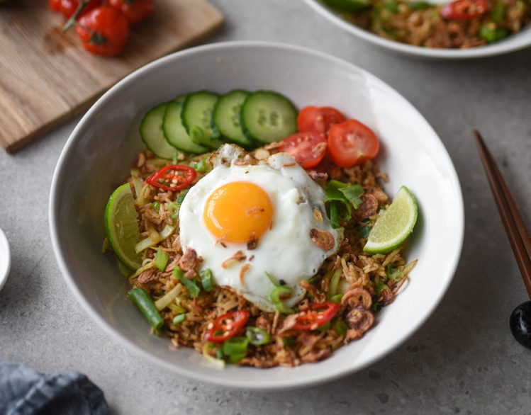

Nasi Goreng

In the Indonesian language, the term “nasi” means rice, “goreng” means fried, and “kampung” means village. While there are many variations of fried rice, however, nasi goreng kampung is my favorite.
It’s a common dish to find across Indonesia, yet it’s still one of Indonesia’s most treasured dishes for a reason: it’s incredibly packed with flavors! Give this recipe a try – and see for yourself.
Ingredients
- 2 1/4 cups cold white rice (leftover is best)
- 3 tablespoon vegetable oil
- 1/2 pound chicken, fried and shredded
- 3 tablespoon sweet soy sauce (kecap manis)
- 2 eggs
- 1 tablespoon broth powder or bouillon
- Spice Mixture:
- 5 cloves shallots
- 3 cloves garlic
- 3 red chilis, chopped
- 2 teaspoon shrimp paste, fried
- 2 teaspoon salt
- ½ teaspoon pepper
How To Make:
- Heat a large non-stick pan or wok on high heat and add vegetable oil. Once heated through, add in the salt, chili, garlic, shallots and shrimp paste. Saute until fragrant.
- Beat the eggs, then scramble it into the pan. Add the cold rice, shredded chicken, sweet soy sauce, bouillon, and pepper. Saute all the ingredients until well-combined. Adjust spices to taste.
- Divide the Nasi Goreng Kampung into 2 portions and serve with krupuk, sambal oelek, extra fried egg, wedge of lime, scallions, and/or pickled cucumbers. ENJOY!
- Leftovers will keep for 2-3 days if stored in an airtight container in the fridge.
Back to recipe list